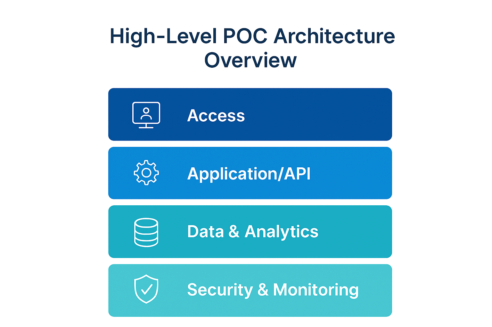
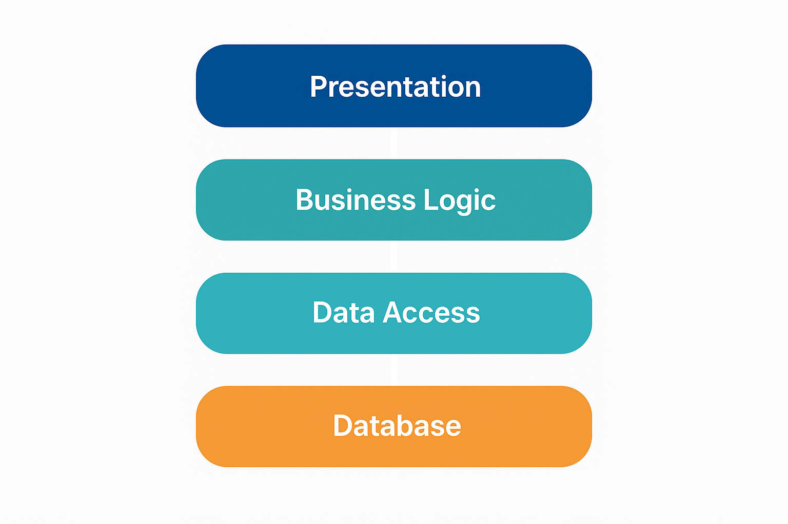

Secure Cloud-Native Supervisory Platform – Proof of Concept (PoC)
Bank of Ghana | Gemstone Consult
Prepared by: Muzammal Hussain
Project Owner: Amofa Baffoe Project
1. Introduction & Purpose
This PoC demonstrates how the Bank of Ghana can collect, validate, transform, and visualize regulatory data using secure AWS cloud components.
All operations use synthetic datasets, with no connection to live systems.
The goal is to validate cloud-native supervision, compliance automation, and anomaly detection.
2. PoC Objectives
- Modernize regulatory data processing using cloud-native architecture.
- Enable automated compliance checks and risk monitoring.
- Provide dashboards with near real-time insights.
- Demonstrate simple ML-based anomaly detection.
- Ensure secure VPC-based deployment aligned with Basel III, FATF, BCBS239.
3. High-Level Architecture Overview
The architecture includes Access, API, Data, and Security layers.

Figure 1: Sample Supervisory Dashboard View
4. VPC Architecture (POC Network Design)
The VPC is segmented into a supervisory control subnet and several participating bank subnets.
Each subnet is isolated, ensuring controlled flow and full security.

Figure 2: VPC layout with control subnet + bank subnets
Click here to view full-size VPC diagram
5. Data Flow Overview (End-to-End Pipeline)
This diagram shows the path of a synthetic dataset from ingestion through ETL to dashboards.

Figure 3: High-level data flow from input → processing → reporting
6. Test Environments
| Environment | Purpose | Users | Notes |
|---|
| DEV / BUILD | Unit tests & config | Amofa + Tech Lead | Small synthetic data |
| POC-TEST | Full pipeline test | Amofa + ICTD | Medium–high volume |
| POC-DEMO | Presentation-ready | BoG teams | Read-only |
| ML-EXPERIMENT | ML model tests | Amofa | High volume |
7. Synthetic Data Types
- Basel III prudential dataset: CAR, LCR, NSFR, RWAs
- Liquidity dataset: daily balances, inflows/outflows
- Transaction dataset: TxID, amount, channel, device
- STR/SAR dataset: report types & linked transactions
- Operational logs: login failures, access patterns
8. Timeline (One-Month PoC)
- Week 0 (3 days): Technical brief, scope, test plan
- Week 1: VPC + IAM + S3 + API Gateway
- Week 2: Lambda ETL + RDS + validation flows
- Week 3: Dashboards + ML anomaly detection
- Week 4: Full testing + documentation + demo
9. Dependencies
- AWS Cape Town region access
- IAM permissions
- Synthetic datasets
- QuickSight license
- ICTD focal point
10. Success Criteria
- 95%+ ingestion success
- Dashboards load under 3 seconds
- ML models flag anomalies correctly
- All logs visible and auditable
11. Risks & Mitigation
- AWS access delays → provide sandbox.
- Missing synthetic data → auto-generate samples.
- QuickSight access issues → provide shared session.
12. Conclusion
This PoC confirms the feasibility of a secure, cloud-native supervisory platform for BoG using
synthetic datasets. It provides a safe, isolated, and scalable foundation for future production-grade development.
Confidential — Prepared for Bank of Ghana | Gemstone Consult — PoC Documentation